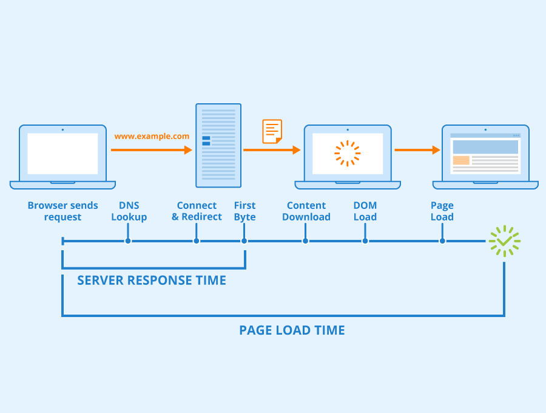

When you search for a specific wedpage the internet browser that your useing sends a HTTP GET request to
the wedpages server that your looking at. The request that is sent have information that the servers need
like the requested URL and the type of request like GET or POST.
2. Receiving the Request on the Server
The server processes the request and replies with and HTTP response that is send back to the
browser that is being used. The resonse that is send back includeds the information that was requested
as well as any addtional information that may be needed like cookies.

3. Retrieving the Web Page Content
Once we have received all necessary data from the server, which can include HTML,CSS and JavaScript the wed browser starts
downloading the contents.
Conclusion
When all the data is fully loaded, then you can start interacting with content, and any addtional interactions
that you make with the wedpages startes the entair processes agian for that specifc interaction.